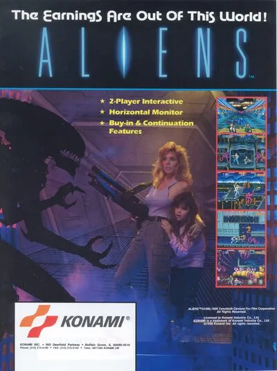

FBA (FinalBurn Alpha)
Aliens
- Año: 1990
- Desarrollador: Konami
- Género: Plataformas / Disparos con desplazamiento
- Jugadores: 2 jugadores
La estación espacial Hadley tras varias semanas de intentos, perdió definitivamente el contacto con el personal de Weyland Yutani en la base exterior LV426 de la colonia Acheron, por lo que las autoridades deciden enviar en misión especial de rescate a los marines con un equipo de la USS Sulaco para investigar y esclarecer lo ocurrido. Nadie se podía imaginar el infierno que les esperaba… tras este breve e inquietante historia, nos sumergiremos de lleno en un juego de acción (y adicción) hasta conseguir acabar con todos los aliens y su reina para rescatar a la pequeña y poner fin a la pesadilla.
En este juego, los jugadores toman el papel de la Teniente Ellen Ripley o el cabo Dwayne Hicks, en el que deben sobrevivir al infierno en el que se encuentran y en su lucha, abriéndose camino a través de cientos de xenomorfos ( o Aliens de toda la vida), acabar del todo con todos ellos y dando caza a su reina, donde primero lucharemos en su nido y luego, en una original lucha final (nos encontraremos de sorpresa) en nuestra nave Sulaco. En dos de los tres niveles (largos) del juego también aparece la pequeña Newt , la cual intentamos rescatar de las malvadas garras de los Aliens.
Los personajes protagonistas son exactamente iguales en sus habilidades, lo único que el 1º jugador representará a Ripley y el 2º jugador será el “graciosete” de Hicks.
Los jugadores van provistos por defecto de la famosa arma militar por excelencia, la M56 Smartgun aquella cacho ametralladora que hace ese ruido tan característico y letal a partes iguales. Además, los jugadores recogerán por el camino lanzacohetes, lanzallamas y armas láser 3 direcciones bastante efectivos.
El juego utiliza 2 botones, uno de disparo mientras el personaje avanza de pié y otro en el que va de cuclillas, ideal para limpiar de xenoformos pequeños. También pueden lanzar bombas (al recogerlas por el camino) pulsando los dos botones simultáneamente.
Como hemos comentado, el juego consta de 3 largos niveles (con 2 fases de vehículo terrestre intermedios, que llamarlos niveles me parece exagerado) en primero, la búsqueda y rescate de la pequeña Newt y luego en caza y exterminio de la Reina Alien.
Controles
Dos botones.
| Panel | Juego |
|---|---|
 | Disparar de pie |
 | Disparar agachado |
  | Empezar |
 | Meter una moneda |
+  | Salir del juego |
El panel en FBA (FinalBurn Alpha)

Argumento
Recopilado de internet (2026-11-02).
Basado en la película Aliens: el regreso (1986). Ellen Ripley y el cabo Hicks se abren paso a tiros entre los aliens de la colonia, desde las viviendas y la fábrica hasta la guarida de la Reina alien.
Final: tras escapar, el último combate es contra la Reina en la nave Sulaco, a bordo de un exoesqueleto de carga. Hay dos formas de ganar: abrir la esclusa y lanzarla al espacio, como en la película, o seguir luchando hasta que la Reina revienta.
Fuentes
Jugabilidad
Recopilado de internet (2026-11-02). Lo marcado con ⚠️ no está probado en la bartop.
- Tipo de juego: run and gun de desplazamiento lateral, con algunos tramos en tercera persona (disparando hacia la pantalla). Uno o dos jugadores.
- Personajes: Ripley y Hicks; solo cambia el aspecto: tienen las mismas armas.
- Vida: varios puntos de vida; cada ataque de un alien quita uno. Sin vida, pierdes una vida; sin vidas, se acaba la partida.
- Armas: se empieza con un smart gun y se puede cambiar por lanzallamas, lanzamisiles o lanzagranadas.
- Estructura: 6 fases con jefe al final (detalle en «Guía de niveles»).
Botones según las guías (⚠️ por confirmar)
| Recreativa | Panel | Acción |
|---|---|---|
| Botón 1 + Botón 2 | B + A | Lanzar una bomba (se recogen por el camino) |
Fuentes
Guía de niveles
Recopilado de internet (2026-11-02).
Son 6 fases:
| Parte | Fases |
|---|---|
| Fases | Living QuartersFactoryFactory 2Queen Alien's DenEscape RouteSulaco |
- El jefe final es la Reina alien, contra la que se lucha con un exoesqueleto de carga.
- El longplay de «Vídeos» se pasa el juego dos veces seguidas.
Fuentes
Objetos
Recopilado de internet (2026-11-02). Lo marcado con ⚠️ no está probado en la bartop.
| Objeto | Qué hace |
|---|---|
| Lanzallamas, lanzamisiles, lanzagranadas | Sustituyen al smart gun. |
| Bombas | Se lanzan pulsando los dos botones a la vez. |
Fuentes
Trucos y secretos
Recopilado de internet (2026-11-02). Lo marcado con ⚠️ no está probado en la bartop.
Secretos
- Dos finales: abrir la esclusa para lanzar a la Reina al espacio, o seguir luchando hasta que reviente.
Fuentes
Longplay

Partida completa de la recreativa, sin morir y con las dos vueltas (44 min), de iconoclast: Aliens (1990) - No Death 1CC (2-ALL).
Pulsa el minuto de un nivel para ver el vídeo desde ese punto.